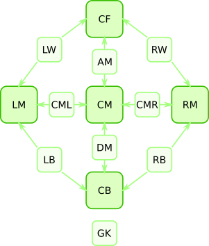
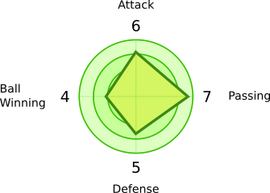

Predicted Attack / Defense flow diagram:
Green arrows: Attack flow.
Grey arrows: Interceptions.
Blue arrows: Shots blocked by the opponent's defenders and the goalkeeper.
Team formation
Main positions
There are five main player positions used by the match engine: CB, LM, CM, RM, CF.
Intermediate positions
For tactical flexibility, there are intermediate positions between adjacent main positions. Players in intermediate positions share their time equally between the corresponding main positions (for example, an LB spends half of their time as a CB and half as an LM):
- LB: CB and LM
- DM: CB and CM
- RB: CB and RM
- CML: LM and CM
- CMR: CM and RM
- LW: LM and CF
- AM: CM and CF
- RW: RM and CF
GK position
There is also a special position for a goalkeeper (GK) who protects the goal from the shots of the opponent team. There can be at most one GK in a team formation.
Bench
Unused players stay on the Bench. (You still have to pay wages to these players, even if they don't play.)
Player stats
A player has four main stats:
- atk: attack, shooting (used by CF)
- def: defense, blocking opponent's shots (used by CB and GK)
- win: ball winning, interception (used by all except GK)
- pas: passing, moving the ball forward (used by all except GK and CF)
Flow of the game. Passing and shooting
The ball is always at one of the main positions (CB, LM, CM, RM, or CF), and it is always controlled by one of the two teams.
When your team controls the ball at CB, it attempts to pass to a midfield position. When the ball is at a midfield position, it attempts to pass to CF. When the ball is at CF, one of your forwards shoots. The ball then can be blocked by the opponent CB and GK defense. If neither stop the ball, you score and the game is resumed by the opponent team from CM position. Otherwise, if CB or GK stop the ball, their CB take possession of the ball.
Ball-winning
Ball-winning is the property that determines how involved the player is in the game. It is crucial for successfully receiving a pass as well as for intercepting the opponents' passes.
The success of your team's pass from the position A to the position B is determined from the passing of the A player who controls the ball and the ball-winning of your B position players. These numbers are compared against the ball-winning of the opponent team at B. The winning team gains possession of the ball at the the position B.
Transfers and wages
Divisions, promotion and relegation
TV and sponsor money
| Division | TV and sponsor money (per point) |
|---|---|
| 0 | $5K |
| 1 | $10K |
| 2 | $15K |
| 3 | $20K |
| 4 | $25K |
| ... | ... |
Keyboard shortcuts
Press 1 , 2 , and 3 on the keyboard to jump between Tactics, Transfers, and Help tabs.Questions?
This game is a prototype, not a polished product. Things may break and/or improve in the future.
The game state cannot be saved, it is supposed to be a 30-minute "coffee-break" experience (rather than a multi-year endeavor).